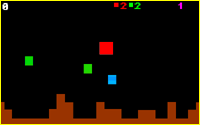
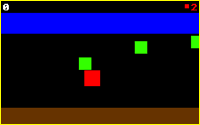
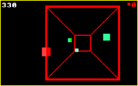

|
Welcome to THE DEGENATRON Archive and Gaming Page "I'll never go to school again!" Who can forget the first time they played Defender of the Faith right there in their own living room? Sure, back in those days the arcades still ruled, but that Christmas in the early 80's when my mom bought me that shiny new Degenatron was the end of arcades for me - at least for a while. The damn thing even took quarters. I must have spent about 48 hours straight playing the only three games the system would play, but they were enough back then. So many memories - trying to break the 10,000 point barrier (they'd send you a special patch if you could prove you did!); bashing the machine on the floor so that it'd bug out and replace the standard colors with something more psychedelic; having to take the occasional break to hop down to the corner deli for some change. It was video gaming's golden age. I made this site as a small tribute to my favorite console from gaming's past. Be sure you check out the cool emulator I found that actually allows you to play all three Degenatron games exactly as they really were! I also found a great old magazine ad for you to look at. I'm always looking for new Degenatron stuff to put up, so email me if you find anything good! |

Click one of the links to load the Degenatron emulator. It's listed as version 0.4a, so I guess they've still got a lot of work to do.
But it plays just like I remember.
|  | DEFENDER OF THE
FAITH "Save the green dots with your fantastic flying red square!" The original side-scroller and one of my favorites of all time. It's no cakewalk, though - this game is old-school difficult! Play Emulator! |
|  | MONKEY'S PARADISE "Swing from green dot to green dot with your red square monkey!" Widely regarded as the inspiration for the current craze of monkey games. Sadly missing the underwater level from the arcade machine. Play Emulator! |
|  | PENETRATOR "Smash the green dots deep inside the mysterious red square!" I never thought a joystick was the right controller for this game, but then what do I know? It sure sold well enough. Play Emulator! |
This section is for game screenshots, and whatever other kind of scans I can find.
Old magazine ad - check out those pre-release screens!
You are visitor number 340128
Member of Degenatron WebRing
Site Best Viewed with Microsoft Internet Explorer 4.x or newer
Also Netscape Communicator
Images/Source ©2000 Scott Long
SL Programming
E-mail: dairyman2078@yahoo.com